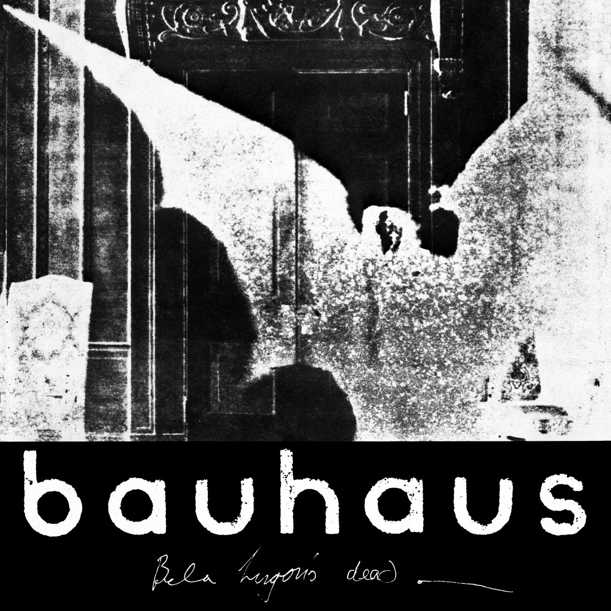

O pós-punk é um gênero musical que surgiu no final dos anos 1970, após o auge do punk rock, como uma evolução mais experimental e artística. Ele manteve a atitude do punk, mas explorou sonoridades mais complexas, incorporando elementos como música eletrônica, dub, afrobeat e jazz. As letras também se tornaram mais introspectivas e abordaram temas como alienação, política e existencialismo.
Conheça algumas bandas post punk:
| Banda | Atividade | Origem | Integrantes |
|---|---|---|---|
| Bauhaus | Siouxsie and the Banshees |